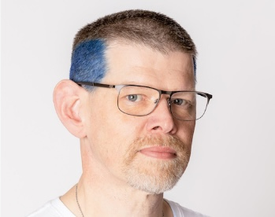

{kind=link}

Imagine never counting carbs, announcing food, or constantly monitoring your glucose
Biomed’s adaptive Automated Insulin Delivery technology is designed to reduce the daily burden of diabetes management while helping people stay informed, confident, and in control.
Built on clinically validated research and open-source innovation, our systems minimise the mental load of diabetes management while improving confidence, control, and quality of life. Our platform shifts diabetes management away from rigid, device-centric automation and toward empowered human agency – giving users continuous awareness without constant action.
David brings extensive experience across software development, systems management, and open-source diabetes innovation. As a core contributor to advanced AID development and a team member of the Baker AID and CLOSE-IT studies, David is focused on building flexible, evidence-backed technology that makes diabetes management easier and more intuitive.
With a background in software engineering, systems administration, and healthcare technology, Tim is passionate about improving health outcomes through intuitive diabetes innovation. A contributor to the CREATE Study and open-source AID development, Tim helps drive Nascence’s vision of confident, life-aware diabetes management.
Dr Grace is a data scientist and medtech founder focused on intuitive diabetes technology and community-led health innovation. She brings expertise in data analysis, regulatory strategy, and using technology to improve health outcomes.
Natasha is a corporate advisor and investment banking specialist with over 25 years’ experience across technology, capital raising, and strategic growth. Chair of the Board, she supports Nascence Biomed’s commercialisation pathway, partnerships, and long-term growth through her deep expertise in healthcare and innovation-focused transactions.
Nascence is focused on adaptive, autonomous insulin delivery designed for real-world living. Our approach prioritises ease of use, predictive support, and reduced daily burden while maintaining user confidence and control.
Nascence Biomed is currently progressing through clinical development and commercialisation pathways, with ongoing work focused on regulatory approval and broader accessibility.
Automated insulin delivery (AID), another name for the technology used in an ‘artificial pancreas system’ (APS), integrates an insulin pump and a continuous glucose monitor with an algorithm to automatically adjust insulin delivery in real time.
Autonomous Automated Insulin Delivery (AAID) is level of AID that achieves the outcomes of AID without the declaration of food or the need for manual bolusing.
A do-it-yourself artificial automated insulin system. These have been created by people affected by type one diabetes and made available, via open-source software and online support groups.
The first DIY AID System to have been developed. It has been written by people affected by diabetes with the aim of improving safety, glycaemic control and quality of life. See https://openaps.org
Yes. Nascence technology is built on multiple clinical studies conducted across New Zealand and Australia, including collaborations with leading diabetes research institutions.
Sensor-augmented pump therapy is the use of a continuous glucose monitor alongside an insulin pump for managing type one diabetes. It is the current standard of care that outcomes from automated insulin delivery trials are most commonly compared to. The main difference is that in SAPT there is no algorithm driving adjustments of insulin delivery; the person with type 1 diabetes does all insulin dosing adjustments manually.
This book is a fantastic resource to introduce you to commercial and do-it-yourself artificial pancreas system options.
Further questions or queries? Give us an email:
{kind=link}
{kind=link}
{kind=link}